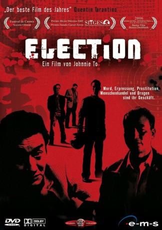
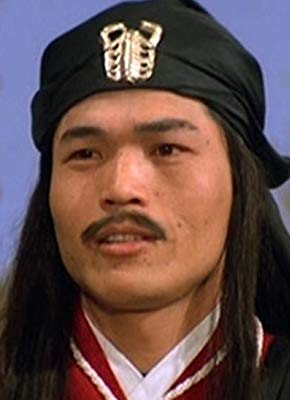

#5162 Election
 
 IMDB-Wertung: 7.1 / 10
IMDB-Wertung: 7.1 / 10  Metascore: 0
Metascore: 0 
Die Triade der Wo Shing, die älteste Triade in Hongkong, will ein neues Oberhaupt für den kriminellen Geheimbund wählen. Die Ältesten treffen sich, um den geeigneten Gangster zu bestimmen. Ihr Favorit ist Lok, ein umsichtiger und weiser Vertreter seiner Zunft. Doch auch der psychopatische Big D meldet seine Ansprüche auf den Vorsitz an, ein Ziel, dass er mit allen Mitteln verfolgt. So kommt es zu einem erbitterten Machtkampf zwischen den zwei Rivalen – ein Machtkampf, der gegen alle Sitten und Gebräuche der Triaden verstößt, da man normalerweise bedacht ist, interne Streitigkeiten durch Verhandlungen zu lösen.
Jahr: 2005
Dauer: 99 Minuten
FSK: 18
Land: Hong-Kong Studio: e-m-s the DVD-CompanyTonspuren:
Untertitel:
Auflösung: 1080p (1920x800) Größe: 5007 MB
Genre: Thriller, Drama, Krimi
Regisseur: Johnnie To
Drehbuch: Lawrence S. Richardson Jr.
Soundtrack:
Darsteller:
 Simon Yam als Lok
Simon Yam als Lok Tony Ka Fai Leung als Big D
Tony Ka Fai Leung als Big D Louis Koo als Jimmy
Louis Koo als Jimmy- Nick Cheung als Jet
 Ka Tung Lam als Kun
Ka Tung Lam als Kun Siu-Fai Cheung als Mr. So
Siu-Fai Cheung als Mr. So Suet Lam als Big Head
Suet Lam als Big Head- Maggie Siu als Mrs. Big D
- Raymond Ho-Yin Wong als Detective Wong
- Tian-Lin Wang als Uncle Teng
- Bing-Man Tam als Uncle Cocky
 David Chiang als Chief Superintendent Hui
David Chiang als Chief Superintendent Hui- Yong You als China Police Captain
 Chung Wang als Whistle
Chung Wang als Whistle- Shao-Peng Chen als Uncle Monk
-  Bun Yuen als Incense Master
- Ting Yip Ng als Senior Inspector Tod
- Ronald Yan als Senior Inspector Yu
- Robert Hung als Sonny
- Hsin Shen als Long Gun
- Paul Che als Tally
- Fung Kwok als Fish Ball
 Chi Wai Wong als Blackie
Chi Wai Wong als Blackie- Chi-Shing Chiu als Big D's Bodyguard
- Sze Yan Wong als Lok's Bodyguard
- Wen-Wei Lin als Sparky
- Hoi Chau Ho als Uncle Double East
- Pui Chung Tong als Uncle Chiu Chow
- Chu Ho als Mon
- Bo Yuen als Dinosaur
- Jonathan Yat-Sing Lee als Denny
 Chi Ping Chang als Uncle Dead Dog , uncredited
Chi Ping Chang als Uncle Dead Dog , uncredited- Jackson Ha als Policeman , uncredited
- Wing-Cheong Law als Four Eye , uncredited
- Kin-Yung Tsang als Police officer at detention centre , uncredited
 Wah Wo Wong als Triad Leader , uncredited
Wah Wo Wong als Triad Leader , uncredited- Sai Tang Yu als Big D's Lawyer , uncredited
Datei: X:\FSK18-Eastern\Election (2005, FSK18, 1920x800).mkv seit 27.12.2016
Festplatte: FSK18
 Es gibt insgesamt 102 Filme in der Gruppe 'FSK18-Eastern'
Es gibt insgesamt 102 Filme in der Gruppe 'FSK18-Eastern'